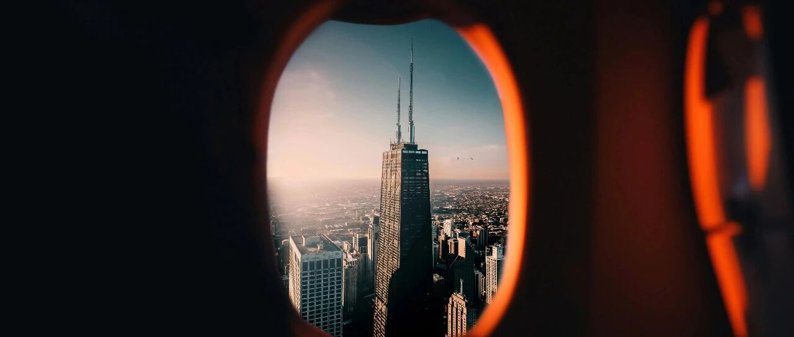

跃出水面看前路~
美股微跌，我持仓的个股涨跌不一，但科技股大多反弹上涨了。
什么操作也没有，继续耐心等，保持平常心。
我个人的物欲很低，这十几年花钱最多的，是在买好公司的股票上，只不过它给我带来了丰厚回报，所以原本的消费就变成了另一种投资。
喜欢买好公司的股票，让好公司替我赚钱，聚焦于跟随好公司复利成长。
个人的精力和能力终究是有限的，世上赚钱、经营企业比我厉害的人很多，借他们的能力帮我赚点钱，就是这么个想法。
整体来说，我选股票，首先是因为这家公司有价值，在未来发展的大趋势上，能够给投资者带来持续的丰厚回报。
其次才是价格，现在这种震荡下跌的行情，可以用更低的价格获取有价值的个股，很划算。
再次，做T只是在有把握的情况下才做，目的是为了降低成本。
最后，买入后尽可能做低成本/负成本，然后中长期持有，才能最大限度享受公司成长带来的价值红利。
不做低成本/负成本，很多时候面对下跌或上涨，压根拿不住，容易恐慌抛售，导致最后踏空。
不要本末倒置，买股就是因为想以一个合适的价格拿到好的、中长期的筹码，而不是短期频繁交易套利。
所以即便价格跌了，我顶多也只选择做做T，把较高的成本降低，而不是直接清仓。
我不喜欢满仓，也不喜欢上杠杆，更不喜欢频繁交易，看好/设置好，其他的就比较少操作。
社交这玩意是有磁场玄学的，同性是真的相吸，本质上就是一场“啥锅配啥盖”的游戏。
如果我频繁交易，动不动上杠杆、满仓、频繁波段套利交易，那这里大概率会慢慢变成吸引这类群体的平台，这恰恰是我最讨厌的。
投资，最重要的是资金、耐心和勇气。耐心等机会、耐心中长期持有，通过中长期持有去享受公司成长带来的价值红利，慢慢变富。
人常常觉得老虎、狮子才是强者，才是自己追求的目标。
但只看到老虎吃肉，睥睨四方，虎虎生威的所谓王者风范，却看不到他更多时间是耐心等待的成本:找不到猎物的饥饿，与猎物搏斗的生死一刻，还有独行的孤单。
印象中，美股市场最近90年大约有50-53次下跌，最终无一例外都修复并创下新高，哪怕是滞胀得让人绝望的上世纪七十年代。
所以不需要恐慌，要做的就是在下跌期以便宜的价格尽可能拿到好公司的股票，通过中长期持有，慢慢做成低成本/负成本，把好公司的股票变成资金成本低或没有资金成本的优质资产。
而不是频繁交易套利，那就本末倒置了。
这一轮的下跌，我2月初就说了，不出意外的话，会在20%，但市场不可预测，也有可能15-30%；
我能做的，准备好资金，耐心等。同时，做好每个节点的规划，慢慢捞自己心仪的个股。
美股的典型特征是熊短牛长，大多数半年内结束急跌，超过一年的，比较少，最近的一次是2022年，跌了一整年，全年跌了35-38%左右。
至于像23年8-10月、24年7-8月这种短期下跌超10%的比比皆是，最终都快速修复且再创新高。
如果这一轮的下跌让你觉得迷茫，看不懂，不妨跃出水面，看看来时的路，看看前路，会坚定自己的方面和选择。
今年的这一轮下跌，目前我个人倾向于会有半年左右的调整期，最迟年底会修复。
会看趋势，会选个股，会做规划和策略，这些都属于谋，比“谋”更重要的，是“断”。
想想曹操怎么评价袁绍的？好谋无断。这是一个相当犀利，中肯，又非常负面的评价。
所以想好不重要，决定怎么做并去做，才重要。也就是执行力度。
很多人希望我讲一讲期权。怎么说呢，散户一般用不到这玩意。
期权的诞生就是为了机构交易而存在的。因为机构相当于一艘大船，必须要买保险，因为一旦启航，开船费、掉头的成本、维护的成本都很高。
期权相当于定期保养，可以让大船航行的更好，99%的散户不需要交易期权，因为船很小，完全可以随时正股买入卖出，没必要学习这些复杂的交易。
玩期权的最好结果也就是娱乐了，但99%的人因为人性的贪婪，和以小博大的心理，最终一定会亏损。
把散户拉倒期权操作是作恶，期权获利前提是认知正确， 工具再多也很少听说有哪个高手是通过期权大富大贵的。
如果有，那也应该去玩期货。
所以一直推荐期权的，可能是为了卖课，多注意些。
… …
最近小儿子迷上了飞机（客机）玩具，波音、空客、麦道等，各种机型都想凑一套。
我媳妇从刚开始给他买大几百块的，到现在限制价格一百块。
结果这小子最近拿到货，都是在那吐槽:现在国内的商品做得越来越差，还是进口的品质好。
我看了下，确实是，做工很粗糙，机翼、尾翼等很尖锐，不小心还会划伤。只能拿到石头上把尖锐的点磨掉。
咱们的外销商品，品质越做越好，但内销品，我们的质量是越做越差。
从来就没有想过什么品牌建设，也没有想过什么客户维护，反正经销商要的就是便宜，他也能卖的出去。
大儿子说这也很正常，社会分配有问题，而且没有落实劳动保障，普罗大众赚钱难。
消费者没钱就对价格特别敏感，销售终端就会去压生产商的价格，生产商为了降低成本，除了降低质量以外，也压低劳动价格。
结果就是，除了本行业外，各行各业都会被带动着这样卷，消费者更穷，更在意价格，最终形成恶性循环。
他最近开始把很多经济学和社会经济活动中现象的逻辑理顺了。
最近半年，他的变化很大，或许跟看过的书、见过的世界有关，量产到质变。
我问他，现在最喜欢哪一本书？他说:《逻辑哲学论》。
问他看得懂吗？他表示大部分可以，少数看不懂，需要我帮忙解答，或等长大些再重读。
这本书是挺不错的，我以前也常读，放书架上，没想到被他相中了。
就这样吧。
免责声明：本人提供的信息仅供参考，不构成投资建议。本人的交易不代表任何立场；投资者应根据自身财务状况、投资目标等情况自主做出投资决策并承担投资风险。投资有风险，入市需谨慎。